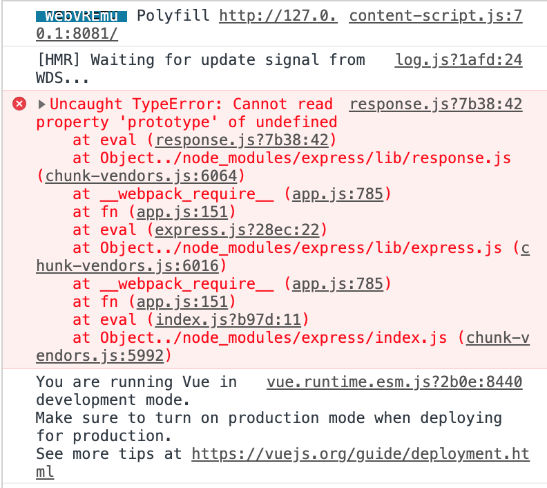
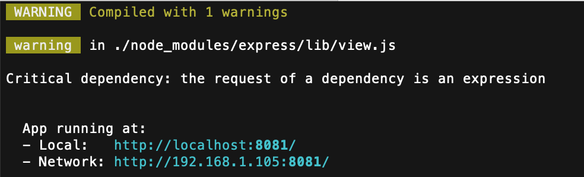
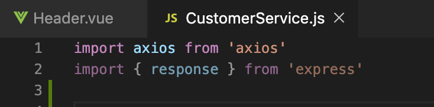

If you see the below error in dev tools,
and a warning as below in the cli after running npm run dev,

then check your code for phantom lines, example, the one on line 2 as shown below;
delete line 2 to fix the error.

What happened?If you are typing code and you use a variable called 'response' without defining it, (or your definition has a typo) then VSCode will assume that you mean a variable called 'response' in the Express framework and helpfully add that import.
Unfortunately, that is not what you want to do - the correct fix is to define your response variable or correct your spelling.